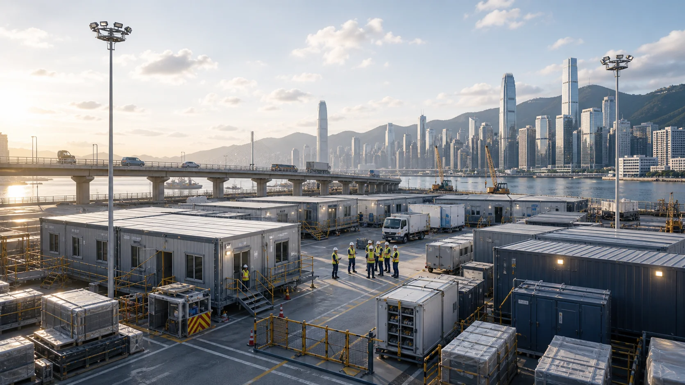
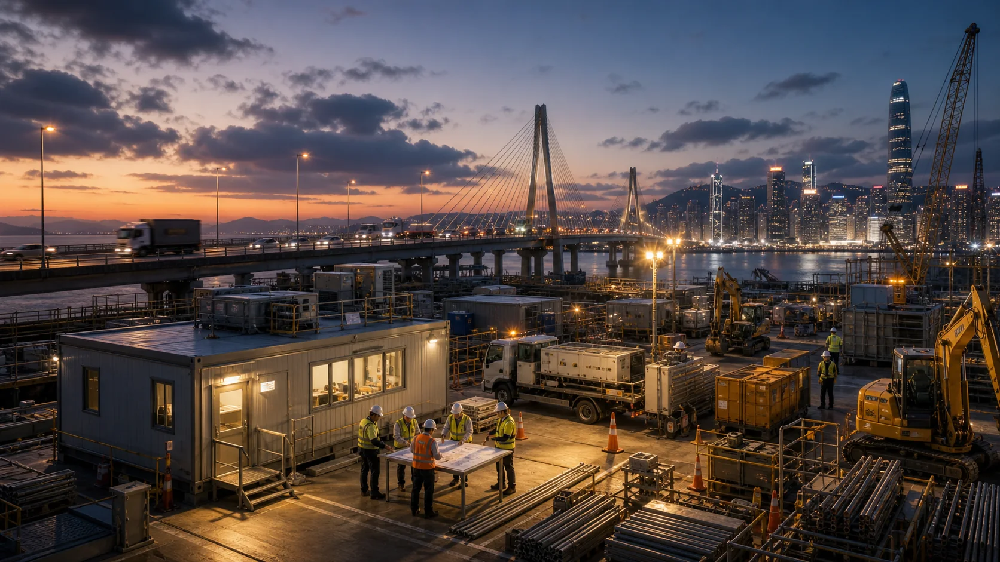

临时工程
临时设施、营地、通行、仓储和现场功能配置的方案整理。
以项目现场的真实推进需求为中心，把临时设施、保障资源和交付节奏组织成可执行方案。
临时设施、营地、通行、仓储和现场功能配置的方案整理。
安全、物资、人员、设备与后勤保障清单协同。
围绕突发需求形成响应流程、责任节点和沟通机制。
对接工程、设备、供应链和本地服务资源，提高协作效率。
从需求研判到交付复盘，帮助项目团队减少沟通损耗。
快速组织临建设施、现场保障与工程资源，支撑重点项目稳健推进。

模块化办公、临时仓储、服务车辆和现场保障资源的组织场景。

围绕桥梁、道路和公共设施项目的抢修协调、照明保障和资源调度。
为展会、论坛、活动和临时场馆提供保障支持。
协助梳理应急抢修资源、现场流程和沟通材料。
为工程项目提供临时设施、后勤和协调支持。
服务办公、生活、仓储和临时功能区配置。